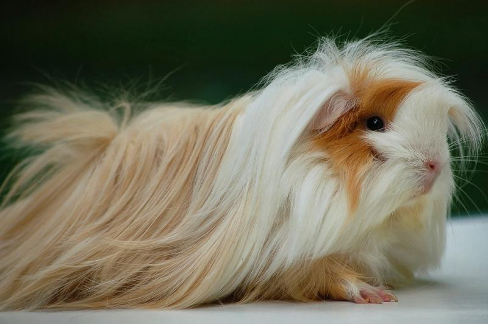
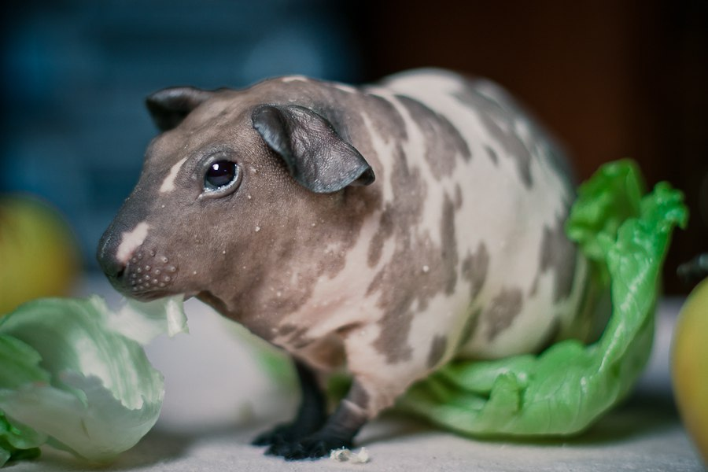
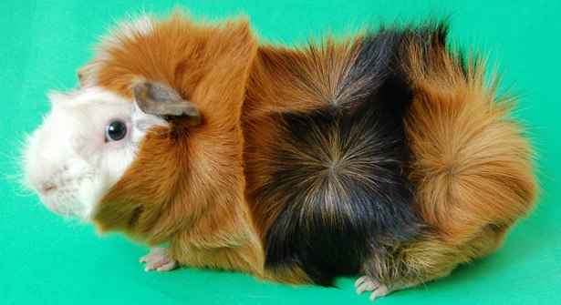

Перуанская морская свинка
Настоящий аристократ. Ее длинная шелковистая и строго прямая шерсть разделяется пробором на спинке и спадает
вниз красивым каскадом. Шерсть растет по направлению вперед и образует на мордочке эффектную челку и
элегантные бакенбарды, ставшие визитной карточкой породы. На крестце свинки расположены две розетки.
Удивительно, но шерсть может достигать целых 30 см в длину.
У «перуанца» гармоничное компактное телосложение, большие выразительные глаза и крупные висячие ушки. А
кругленькие щечки придают мордочке еще более миловидный вид.

Болдуин
Морские свинки Болдуин («bald» - в переводе с английского «лысый»)- очень необычная порода. Они рождаются
полностью покрытыми шерстью, однако после нескольких дней с момента рождения их шерсть начинает выпадать, и
в течение нескольких месяцев они становятся полностью голыми или лысыми. Таким образом, это единственная
полностью бесшерстная порода. Их кожа, как и у свинок скинни, мягкая и эластичная на ощупь.
Болдуины генетически отличны от Скинни и считаются еще более необычными. Свинки породы Болдуин в среднем
немного мельче, чем скинни, и строение их скелета (костяк, телосложение) заметно лучше. Кожа в какой-то мере
более «резиновая» на ощупь, без какого бы то ни было остаточного пуха, как у Скинни. По существу, когда вы
гладите Болдуина, Ваша рука как бы задерживается то здесь, то там, вместо того чтобы плавно скользить по
поверхности кожи.

Абиссинская морская свинка
Одна из старейших пород, абиссинская морская свинка имеет длинную шерсть с так называемыми розетками или
завитками, которые обеспечивают ей неповторимый и достаточно эффектный вид. Для участия на выставках
рекомендуемое количество розеток должно составлять от 8 до 10.
С другой стороны, за длинной шерстью питомца сложнее ухаживать. Этой морской свинке также требуется более
частый груминг. Тем не менее, их приятный и любящий характер, безусловно, перевешивают возможный
дополнительный уход, который им потребуется.
